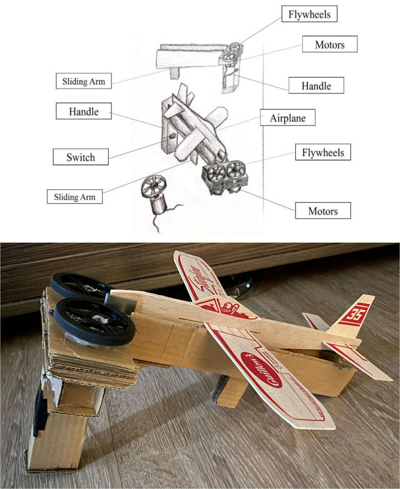

Sky Launcher flywheel launch system
A handheld, flywheel-driven launcher for a balsa glider, designed in CAD, sized with energy-transfer and safety-factor analysis, and built as a prototype.
- Course
- ME 100, University of Waterloo
- Timeframe
- Sep 2025 to Apr 2026
- Focus
- Mechanism design, energy transfer
- Tools
- CAD, prototyping
Overview
The Sky Launcher throws a glider using a pair of motor-driven flywheels. The glider sits on a sliding arm; when it is pushed forward into the spinning flywheels, they grip it and transfer their stored energy into launch speed. A handle and switch make it a handheld device.
The problem statement and goals set by the course, for example launch distance or target requirements.


My contribution
- Translated the project requirements and constraints into a mechanical concept.
- Developed the mechanism and its components in CAD: flywheels, motors, sliding arm, handle and switch.
- Carried out energy-transfer and safety-factor analysis.
- Considered geometry, motion, assembly and manufacturability during design.
- Prototyped and evaluated the design to identify improvements.
Whether this was a team project, and which parts were yours.
Analysis
The design was checked with an energy-transfer analysis, relating the energy stored in the flywheels to the energy delivered to the glider, and a safety-factor analysis on the mechanism.
The key equations, assumptions and results (for example flywheel speed, predicted launch speed, the safety factor and which part it applies to). A screenshot of your calculation or CAD is ideal.
Result and lessons learned
Iterative design and prototyping produced a functional launch mechanism within the project's constraints, and testing the prototype showed where the design could improve.
How it performed, what you found when testing the prototype, and what you would change.